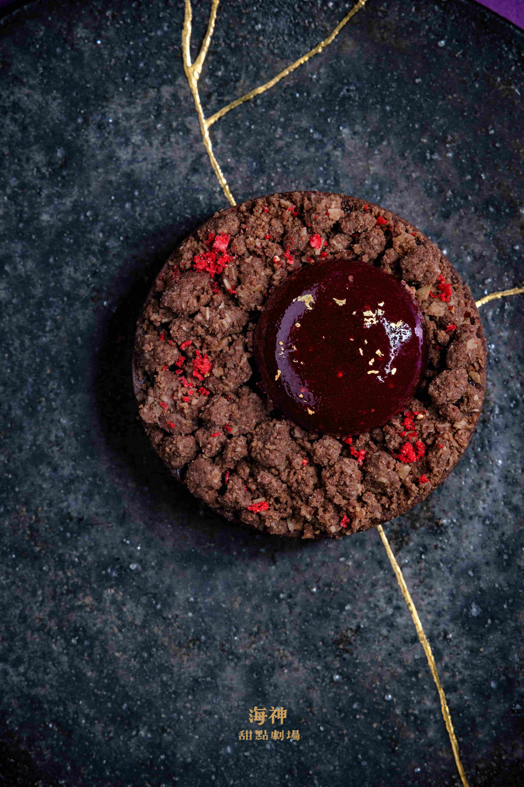
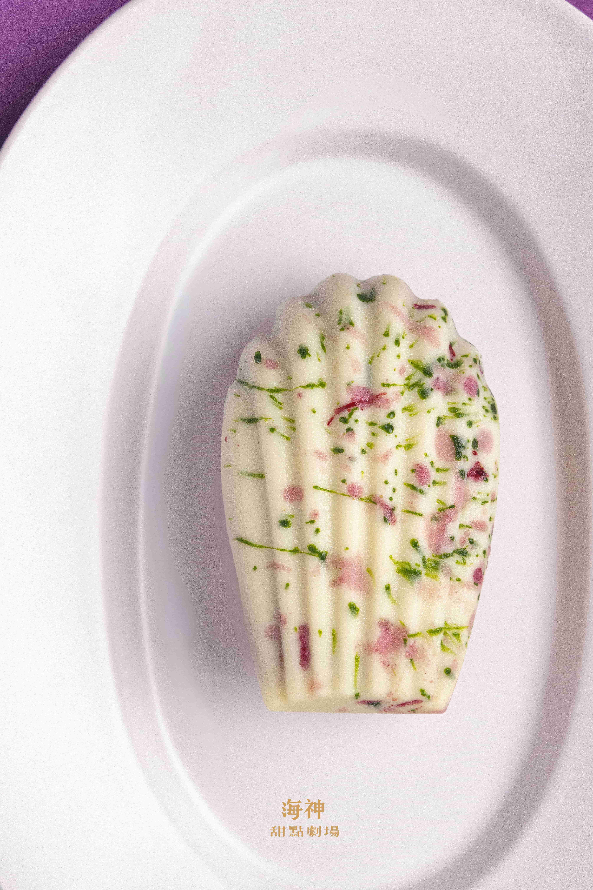
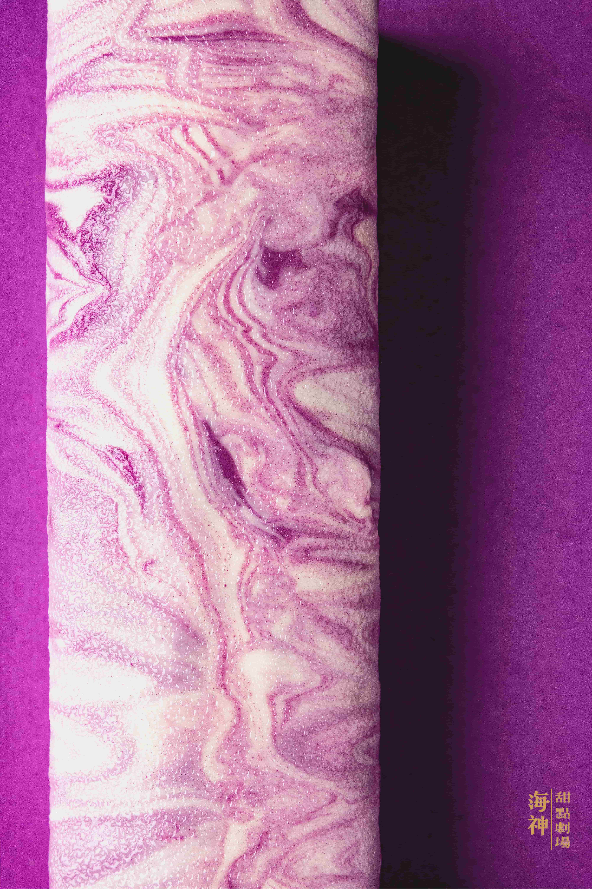
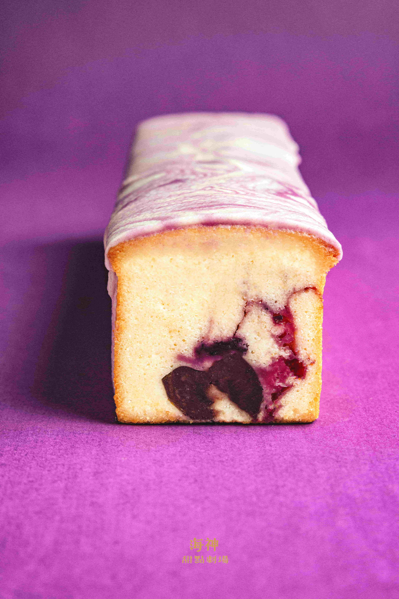
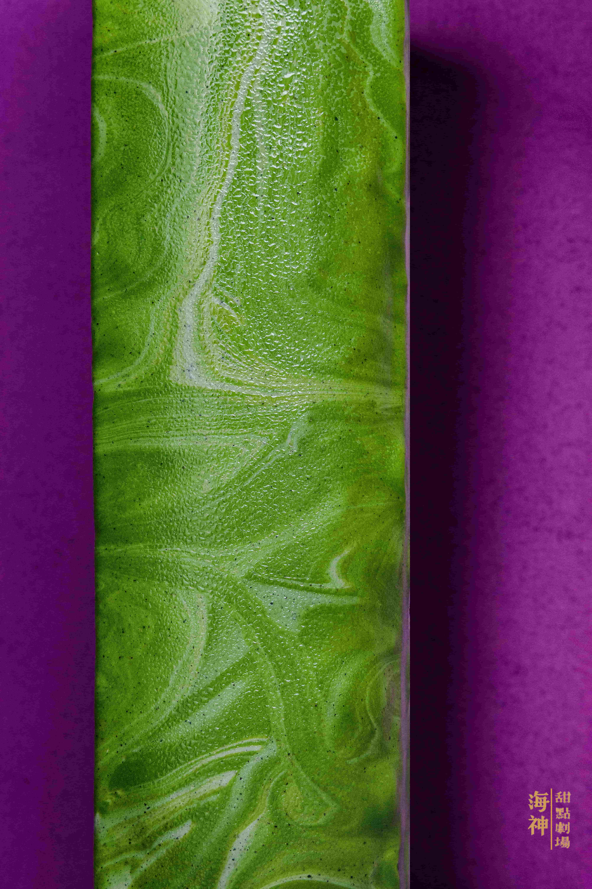
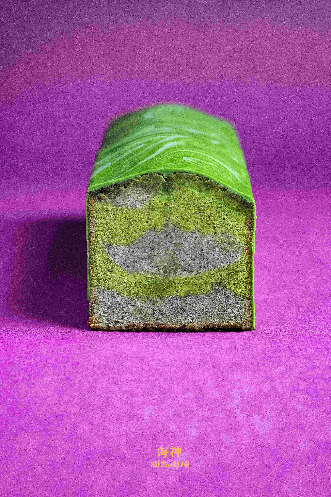
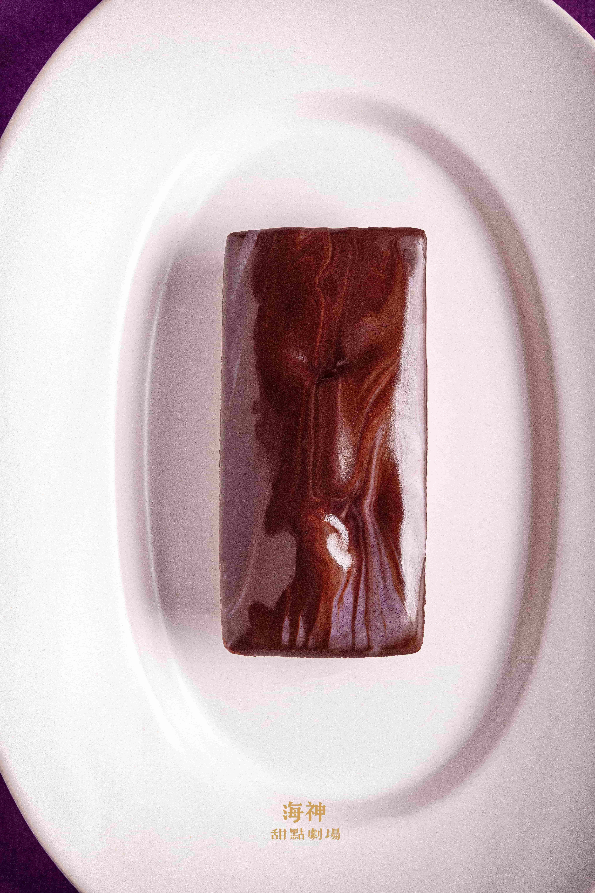
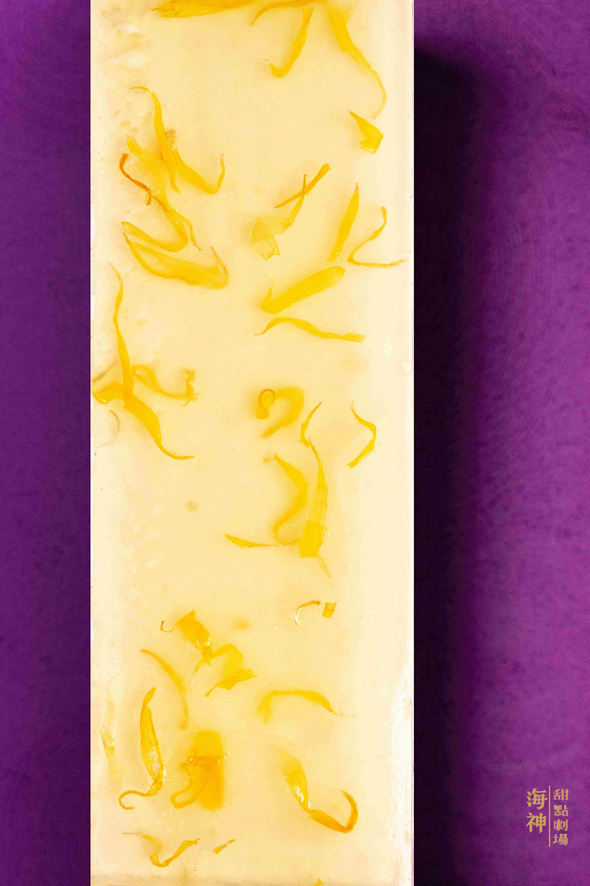
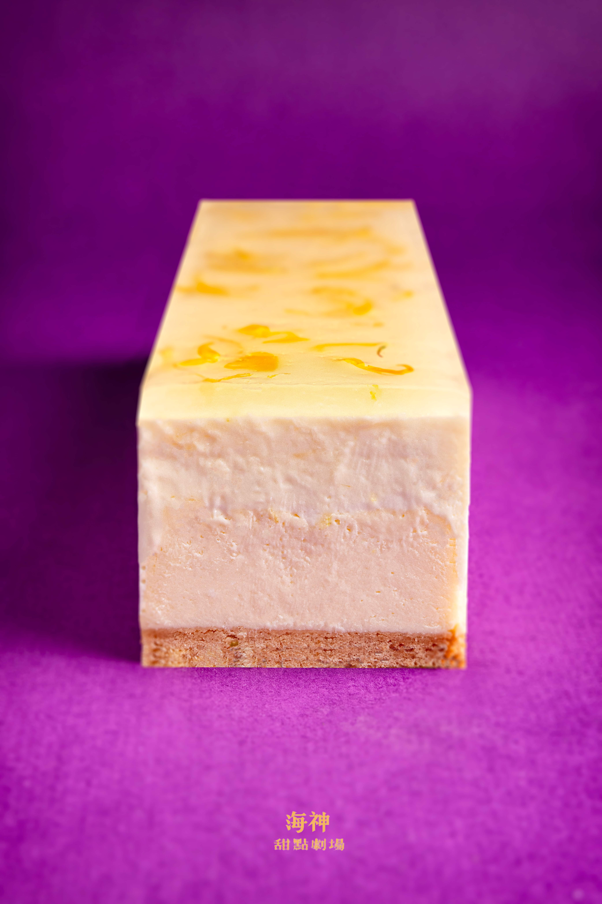
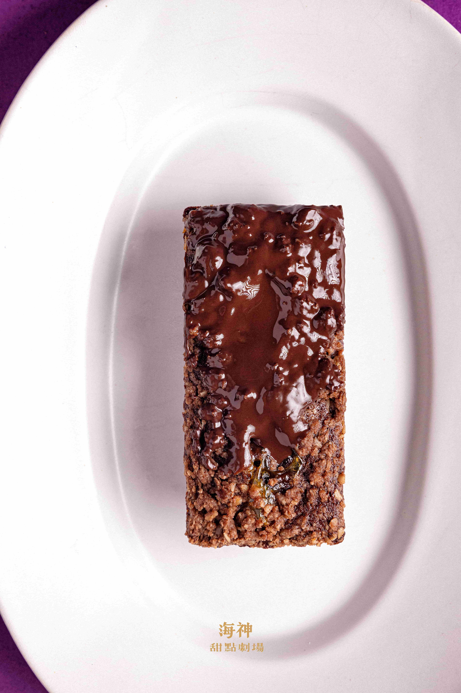

Prometheus by the Sea
夏生的庭園
Hsia Sheng's Garden
A garden that endures through eternity, unchanged.
Each character dwells in her own corner,
cycling through her story without an end.
一座歷經永劫而不毀壞分毫的花園，
這些角色們各自據居角落，
在她們的故事中輪迴。
Scroll to explore
Hsia Sheng's Garden
A garden that endures through eternity, unchanged.
Each character dwells in her own corner,
cycling through her story without an end.
一座歷經永劫而不毀壞分毫的花園，
這些角色們各自據居角落，
在她們的故事中輪迴。
「長年聽歌劇與這些角色共感，我在這些靈魂裡認出了一些永不過時的課題——那些在極端處境裡仍然試圖做出選擇的人，以及那些連選擇的權利都被奪走的人。」
"Nourished by opera across the years, finding resonance in these characters, I have recognized within these souls certain timeless themes — those who, even in the most extreme circumstances, still strive to make a choice, and those from whom even the right to choose has been taken away."
夏生 · 海神甜點劇場
我不只是一個做甜點的人。
同時我也是一個計畫主持人——甜點是這個計畫展現的媒介而不是全部。
夏生的庭園是一個十二章的甜點計畫。每一個章節從一位歌劇女主角的命運出發，提煉出一個情感命題，再把這個命題轉化成可以被觸摸、被品嚐、被記憶的物質。選角的標準只有一個：她們與選擇的關係——那些在極端處境裡仍然試圖做出選擇的人，以及那些連選擇的權利都被奪走的人。
所有的食材、視覺、攝影語言，都由命題為核心孕育發展，先決定主角的調性，再選擇最適切的表現方式。每一個章節完成之後，我會公開寫下它的檢討——哪裡到位了，哪裡沒有。這個計畫不只在做作品，它在主持一個有標準的過程，而這個標準由我自己來檢驗。
最終，這座永生的花園將生出它自己的語言，生生不息。
夏生以庭園主人的身份開場，迎接十一位女主角依序入駐。
Hsia Sheng, as keeper of the garden, opens the door.
冬日庭園 / 光與樹影
有時候我會相信，這座小小的庭園裡，藏著一條秘密路徑，能帶我走向從前的你。
這盒甜點是我對心中那座庭園的詮釋。在追尋風景的急切中，意外地在全然的寂靜裡找到了出口。這份作品清單，是獻給您的地圖，邀請您一同走入這座冬日花園。
❊ 望月｜抹茶塔
❊ 藏｜法式布丁塔

❊ 紅山茶
酒漬櫻桃巧克力貝殼蛋糕

❊ 露染苔石
抹茶柚子費南雪

❊ 礫石小徑
酒漬無花果費南雪
❊ 凝縮的時間｜重威士忌果乾磅蛋糕
❊ 餘溫｜貝里斯奶酒咖啡磅蛋糕
❊ 灰綠的樹影｜開心果巴斯克
她把回憶贈與旁人，卻將哀傷留給自己。
She gave away her memories, keeping only sorrow for herself.
作品一覽 · The Collection
❊ 陰暗之火 · Dark Fire
巧克力塔

是目睹？還是召喚？
她究竟是在瘋狂中看見了她們？還是在召喚她們？
水妖是否承載了奧菲莉亞無處安放的憤怒與慾望？或許她渴望成為眼中燃燒著憤怒慾火的水妖，卻終身守護著純潔的形象與愛情。
風味：草莓／辣椒／巧克力／泥煤威士忌
❊ Never Forget Me
抹茶檸檬瑪德蓮

她漂浮在水面上，
花還在手裡，但她已經不在了。
謹將此作獻給遠行的摯友 Benson。感謝你多年來溫柔的相伴。所有未竟的遺憾，我將它們一同封存在這款作品裡。
風味：抹茶／桑椹／檸檬
❊ 幽冥沁入她的靈魂
優格磅蛋糕


她從宮殿逃入夜裡的森林，
對著虛空宣告自己的名字。
外部是晦暗的，內裡仍是白的——但幽冥已找到縫隙，正在沁入。切開的動作是敘事本身。這次的創作是一條危險而執著的道路，我同時控制著自己以旁觀者的角色觀看奧菲莉亞的迷離，同時又成為她。
風味：桑椹／蘭姆酒漬櫻桃／優格／留名溪威士忌
❊ 遠山的凝視
芝麻抹茶磅蛋糕


倘若能將目光自水面的繁花移開，往前，再往前，
再往更遠更遠的地方眺望，你會看見遠山。遠山也凝視著你。
無論你背負著多大的傷痛，願自然給予你安慰。以大自然類比我們的生命更迭，各種哀傷都只是宇宙間的一顆塵埃而已。發現自己的渺小，而得到安慰。給每一位正在經歷傷痛的人。
風味：芝麻／抹茶／干邑白蘭地
❊ 夜與夜的旅人
藍莓費南雪

只是想找尋光，卻往愈來愈深的夜裡走去。
以為時空會為你裂開縫隙，但那人再也沒有出現。
這款作品的命名取自吉本芭娜娜同名小說。我無意重現那個悲傷的故事，只是奧菲莉亞在清晨從宮殿中安靜出走，前往那條河流之前，踩踏的究竟是怎樣的黑暗，我試圖想像，而那種無望無光的狀態，似乎與吉本芭娜娜這篇小說暗合，所以就用了這個名字。
風味：泥煤威士忌／藍莓／蜂蜜／優格／焦化奶油／巧克力
❊ 水仙的嘆息
切片乳酪蛋糕


那還是愛嗎？
假如每一次的抉擇，他選擇的，都不是她。
「To be or not to be」的質問與嘆息裡，奧菲莉亞並不存在。愛是什麼？以局外人的角度觀看，每一個分岔路口，哈姆雷特都沒有選擇奧菲莉亞。當一個人始終沉溺於自身的悲劇，無暇顧及你的哀傷哪怕一分，那樣的愛，不過是凋落水底的水仙花罷了。
風味：檸檬酒／金盞花／梔子花／奶油乳酪
❊ 秘密的歡愉
巧克力費南雪

難道，沒有愛嗎？
關於你我，許多歡愉的記憶仍暗潮流動。
倘若不存在愛，失去時並不會感覺痛苦。而奧菲莉亞與哈姆雷特間，必然也存在著兩人共同的秘密與歡愉。百香果（Passion Fruit）中的Passion原本是受難的意思，不過常被誤譯為「熱情的果實」。這種一個字卻具備兩種極端不同的歧義，本身就是一種黑色幽默。
風味：泥煤威士忌／百香果／蜂蜜／焦糖奶油／巧克力
❊ 奧菲莉亞的沉溺
桑椹香草慕斯

最後那一瞬間，你在想什麼？
水面浮花是否給了你安慰？
水中的泡沫環抱你如同愛侶？
這款作品是奧菲莉亞甜點盒的主角，也是最後一款。以奧菲莉亞沉溺的瞬間為發想，取樣自 John Everett Millais 的畫作《奧菲莉亞》。有那麼一瞬間，我彷彿也在這逼人的美景之中，隨之窒息。淋面果膠中刻意留存氣泡，是水面的紋路，也是她最後看見的世界。
風味：香草／桑椹／芝麻／泥煤及波本威士忌